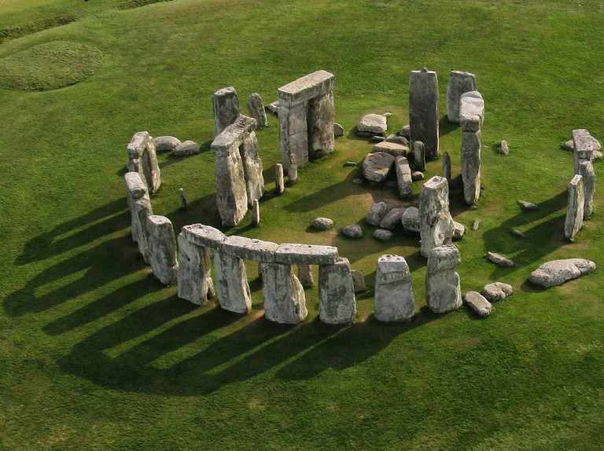
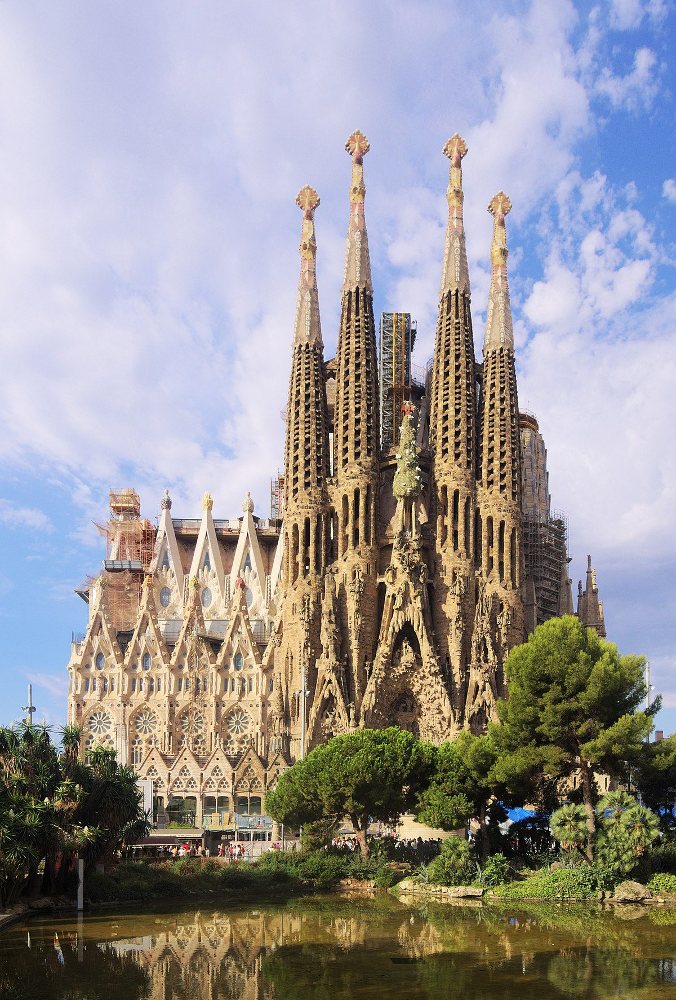
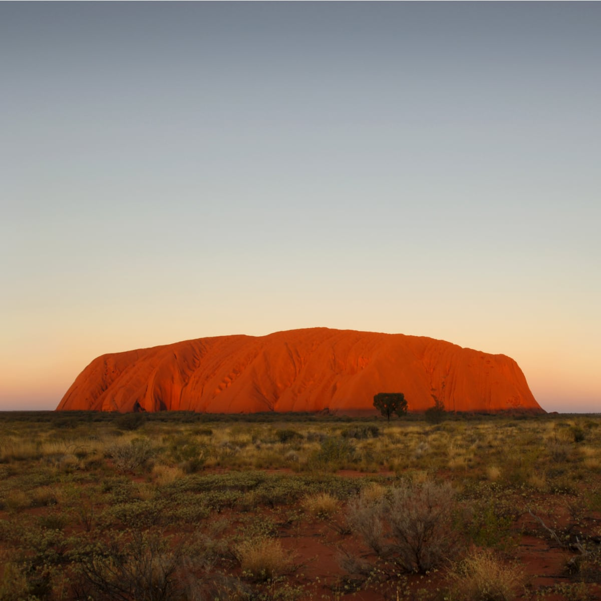

The Grand Canyon is considered one of the finest examples of arid-land erosion in the world. Incised by the Colorado River, the canyon is immense, averaging 4,000 feet deep for its entire 277 miles. It is 6,000 feet deep at its deepest point and 18 miles at its widest.

Stonehenge is one of many mysterious landmarks in the world. Standing in Salisbury Plain, in Wiltshire, this famous monument was built hundreds of years ago in the late Neolithic Age around the year 3000 BC. There is strong archeological evidence suggesting it is a burial site, others believe it serves other purposes, no one knows for sure.

La Sagrada Familia is a large unfinished Roman Catholic minor basilica in the Example district of Barcelona, Catalonia, Spain. Designed by the Spanish architect Antoni Gaudí, his work on the building is part of a UNESCO World Heritage Site. To this day it is still being worked on and is expected to be finished sometime in 2021.

The famous Roman Colosseum is an old piece of architect, dating to a total over 1,900 years this amphitheater is an old Roman relic from the past that used to be a form of entertainment for many, seeing as it hosted gladiatorial shows where people would fight to the death. It appears how it is today as the earthquake of 1349 damaged it in its quake.

The Uluru or Ayers Rock is a massive sandstone monolith in the heart of the Northern Territory's arid "Red Centre". Uluru is sacred to indigenous Australians and is thought to have started forming around 550 million years ago. Uluru has many stories behind it, one such story says that it was to have been formed by ancestral beings during "the Dreaming."